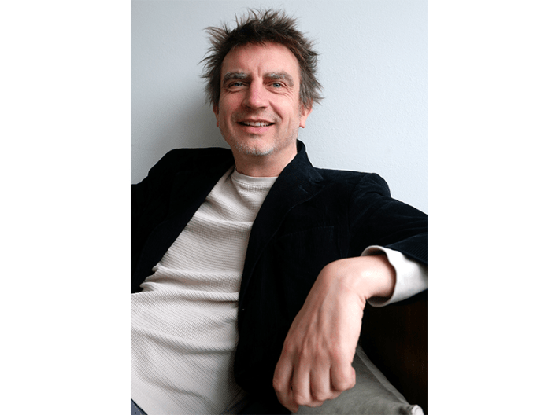

Early in his new book These Strange New Minds, Oxford cognitive neuroscience professor and U.K. Google DeepMind AI researcher Chris Summerfield describes a classic cartoon scene in which Wile E. Coyote has just been led over a cliff by Road Runner, his legs churning for solid ground as he briefly hovers above the canyon below, moments from a catastrophic plunge. “I am writing this book because we have just gone over that cliff,” asserts Summerfield. “The safe ground we have left behind is a world where humans alone generate knowledge.”
Knowledge is, after all, power. It is what has enabled humans to build gleaming civilizations on Earth, to explore the reaches of our starry solar system, to dream up mind-bending artworks, and to grasp the material, cultural, and political dimensions of our everyday realities. As AIs become increasingly savvy at producing and acting on knowledge, what will they or those who control them do with it? In whose interest will they act, especially if AIs begin cooperating with one another?
Summerfield is, at least in the immediate future, less worried about the technology itself than about humans’ capacity to understand how it works and to interact with it intelligently. And this is, in part, the purpose of These Strange New Minds: to help readers understand precisely how LLMs work, how they use language, and why the results look so much like human thought and speech. Over the course of the book, he takes us on a tour of the history of AI’s development—from its early philosophical underpinnings to its pop culture inspirations and impacts and explores our shifting ethics as it relates to these new minds.
Ultimately, Summerfield argues that LLMs are not sentient—at least not in any way humans can understand—that they’re unlikely to take over and destroy the world, but that they may well exacerbate existing problems. After all, AI’s limitations are not that dissimilar from those of the human brain, he says. We spoke with Summerfield about the limitations and risks of a technological revolution that is approaching so rapidly we’ve barely had time to consider it.

CLIFFHANGER:In his new book These Strange New Minds: How AI Learned to Talk and What it Means,cognitive neuroscientistChris Summerfield argues that, like a cartoon Wile E. Coyote, we have all just gone over a cliff in our relationship with AI. “The safe ground we have left behind is a world where humans alone generate knowledge.” Photo by Catalina Renjifo.
You use Wile E Coyote as a metaphor for the “cliff” we’ve run over in regard to AI. How did we get here?
The technology hasn’t yet outrun our ability to control it, but this is the direction of travel. The metaphor refers to the unknowns associated with a new world in which AI systems can generate new knowledge—the first time an agent other than a human has been able to do this.
What is the significance of the language in large language models?
For humans, language is our superpower. Language is the critical cognitive advance that unlocked our ability to cooperate and collaborate and build an advanced civilization. Language allows us to share knowledge with each other, and to create new knowledge by combining ideas: Think of a horse with a horn—oh! A unicorn. So, the fact that AI has learned to talk is a really, really big deal.
To what extent does AI’s mastery of language give it some of the same super-powers as humans—such as the ability to cooperate and to share and create new knowledge?
Cooperation requires more than just language—it requires the ability to infer the beliefs and preferences of others, and to adapt to the social world. We haven’t yet extensively tested situations where LLMs interact with each other, to understand what the consequences may be. Their ability to reason, however, gives AI systems the opportunity to create new ideas, by putting existing pieces of knowledge together in novel ways.
Do LLMs “understand” language or are they just good at acting like it?
The problem is we don’t have widely agreed definitions for what it means to “understand” something in the first place. Do you “understand” how a combustion engine works? Do you “understand” why World War II happened? We don’t have strong criteria for making hard and fast judgments like this. What we can say, however, is that LLMs’ formal competence in language, including in generating entirely novel utterances, is as good as or better than a human, at least for English and other well-resourced languages.
The technology hasn’t yet outrun our ability to control it, but this is the direction of travel.
In the book you explore assertions that AI has become or will become conscious. How could AI consciousness impact society?
I honestly don’t think it would affect society at all, because we would never know whether it is conscious or not. When it comes to any agent other than ourselves, consciousness is very much in the eye of the beholder—I can’t experience your subjectivity, but if you display certain behaviors, I will treat you as if you are conscious. We do this with our pets all the time. I expect that as AI becomes more humanlike, people will come to believe that it is conscious, but we won’t ever know for sure whether that is right or not.
Will AI be a tool, or a new form of person?
I think it’s more useful to think about AI as a tool, and in particular as a sort of digital service that we can use to make decisions on our behalf. People need to remember that when talking to AI they are not interacting with a person—they are using a service that is provided by a technology company. But if it behaves in humanlike ways, it will definitely be tempting to treat AI like a human. However, I am not convinced that what we need is more humans—we have 8 billion of them already. We need better tools for organizing society, so that we can live together more peacefully, prosperously, and equitably—variables that are in short supply right now.
Can LLMs “think?”
LLMs carry out reasoning steps in natural language that resemble those that you and I might make when solving a problem. They can even say these steps to themselves out loud whilst they are reasoning, and—just like for you and me—this improves their chances of finding a good solution. But we haven’t really clearly defined what it means for a human to “think” so there will always be room for some people to claim that what AI systems are doing does not count as “thinking.”
In the book you push back against the idea that the use of the word “computation” as a metaphor for human thinking is somehow socially oppressive. Why?
Some people have argued that if we use the metaphor that the brain computes information, we are somehow lowering people to the level of computers, and that this is intrinsically harmful. I agree that it’s important for us to maintain a notion of human “difference”—we have our own concerns, and they should be treasured—but I think the general idea that it’s oppressive to use computation as a metaphor for the brain is a bit silly. It’s just a useful way of thinking about thinking.
People need to remember that when talking to AI they are not interacting with a person.
You discuss the risks posed by AI “autopropaganda.” How would this differ from the digital misinformation we’re facing today?
Algorithms embedded in content recommendation systems, such as social media platforms, already ensure that we view “autopropaganda”—propaganda for the views we already hold, i.e. that confirms our existing beliefs. If AI became highly personalized, there is a risk that it could behave similarly, only telling you what you want to hear. The difference would be that AI systems can actively engage with you in persuasive dialogue, so the effect risks being much stronger.
Many people envision a near future where AI solves the looming issues of the day, but as you discuss in the book, this expectation may be misplaced. Why?
AI is very good at retrieving knowledge and reasoning about formal problems, but many of the issues that we face today require a different sort of skill—the ability to bring people together to cooperate. We have yet to see much evidence that AI is good at this—although there have been some early attempts, including one that I led at Deepmind. [A study on whether AI can function as a political mediator.] The ability to solve formal problems, like playing Go at Grandmaster level or solving logic puzzles, does not necessarily equip you for the real world, where things tend to be quite messy. Outcomes are uncertain—stochastic rather than deterministic—and challenges can arise without warning.
You close the book by exploring some of the potential AI doomsday scenarios. What worries you the most?
The arrival of AI is likely to exacerbate systemic problems that already exist, such as disruption to the labor market from growing automation, the concentration of capital in the hands of large multinational companies, the spread of mis/disinformation in the information ecosystem, the use of cyber technologies for criminal or destabilizing attacks on critical infrastructure, and the environmental costs of intensive demand for energy, water, and rare earth minerals.
I am worried about what will happen when AI systems begin to interact with each other. As humans, we are not all that smart on our own. You might think you are smarter than a chimp, but if I stranded you both on a desert island, my money is on the chimp surviving longer. We are good at cooperating, and our intelligence is enabled by our social world. When agents start to interact, they will naturally find modes of acting and communicating that may be misaligned with human values. This is what worries me most! 
Lead image: cybermagician / Shutterstock